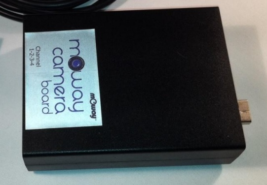

Robot Moway

Les capteurs d'images
Il existe deux types de capteurs, permettant de convertir un rayonnement lumineux en un signal électrique, pour acquérir des images ou des vidéos.
Les capteurs, de type CCD (Charge-Coupled Device), étaient les plus performant notamment en raison de leur efficacité quantique (le rendement des photons convertis en électrons est proche de 100%), d'un faible niveau de bruit, et de moins de problèmes de distorsion dynamique (Rolling shutter). Pour ces raisons, les CCD sont généralement appréciés dans le domaine médical ou en astronomie.
Les capteurs, de type CMOS, étaient moins performant que les CCD, mais, depuis quelques années, leurs performances sont devenues équivalentes à celles des CCD, au point qu'aujourd'hui le choix du capteur dépend surtout de l'application. En raison de leur faible cout par rapport aux CCD, les capteurs CMOS sont omniprésents dans l'électronique grand public, comme dans les webcams ou les smartphones.
Composant électronique permettant de numériser des images.
Visionnez la vidéo ci-dessous:
Expliquez quelle est, selon vous, la différence de qualité (couleurs, contraste, luminosité, parasites, ...) entre des images prise par un capteur CMOS ou par un CCD ?
Les appareils photographiques numériques
Fonctionnement
Un appareil photographique numérique est un système qu'on peut décomposer en différentes parties:
- Un capteur d'images.
- Un objectif avec une optique pour faire un grossissement sur la scène et la mise au point, et un diaphragme pour contrôler l'intensité lumineuse reçue par le capteur d'images.
- Un système de visée pour cadrer le champ de vision sur la scène. Si le système de visée utilise la même optique que pour la prise de vue, on dit que l'appareil photographique est de type "reflex".
- Un obturateur, qui permet d'interrompre le flux lumineux, pour contrôler le temps d'exposition, à la lumière, du capteur d'images.
- Des composants électroniques pour traiter, transmettre ou stocker les images et vidéos.
Appareil photographique numérique de type "reflex".
Caméra du robot Moway
Le module caméra du robot Moway s'apparente à un appareil photographique numérique. Il n'a pas de système de visée ni d'obturateur, donc il n'est pas fait pour faire de la photo. Son objectif peut se visser/dévisser pour faire la mise au point, et dispose d'une seule lentille optique qui ne permet pas le grossissement. Son électronique lui sert à transmettre le signal vidéo par ondes radio.

Module caméra du robot mOway.
Les spécifications du capteur CMOS, du fabricant Omnivision et de référence OV7949, de la caméra pour le robot mOway sont:
- Formats d'image: PAL: 628x586
- Consommation d'énergie: 168 mW
- Zone d'image: 5.961mm x 4.276mm
NTSC: 510x496
- Plage de température: -20°C à +70°C
- Plage de temps d'exposition: NTSC: 12 µs - 1/60 s
- Taille d'un pixel: 9.2 µm x 7.2 µm
PAL: 12.5 µs - 1/50 s
Choix d'une lentille optique
Un objectif, d'appareil photographique numérique, doit avoir au moins une lentille, comme pour le module caméra du robot Moway, pour que l'image d'un objet, d'une taille et à une distance donnée, couvre, au mieux, la surface du capteur d'images.
Pour choisir la lentille qui convient le mieux, il faut déterminer sa distance focale en [mm].
Représentation de la distance focale d'une lentille.
Pour calculer la distance focale d'une lentille permettant que l'image d'un objet, de hauteur H et situé à une distance d de la lentille, couvre toute la hauteur h du capteur, il faut utiliser la formule:
Calculer la distance focale, en [mm], d'une lentille permettant que l'image d'un objet, de 20 cm de hauteur et situé à une distance de 3 mètres de la lentille, couvre toute la hauteur du capteur de la caméra du robot Moway: .
La vidéo
Visionnez, en utilisant des écouteurs, la vidéo ci-dessous et répondez aux questions qui suivent:
Enumérez les formats vidéo ?
Enumérez les systèmes de codage des couleurs en vidéo ?
Utilisation de la caméra du robot
Le logiciel Yawcam
Yawcam est un logiciel permettant de capter et de diffuser le flux vidéo, provenant d'une caméra, connectée à un ordinateur. Les modes de diffusion sont:
- Fichier : Capture à intervalle fixe d’une image de la webcam et sauvegarde du fichier sur un disque dur local ou réseau. Principaux paramètres : dossier de destination, nomenclature des fichiers, type de fichier (jpg, png ou gif), nombre maximum de fichiers à conserver, intervalle de la capture d’image et qualité de l’image.
- FTP : Capture à intervalle fixe d’une image de la webcam et sauvegarde du fichier sur un serveur distant. Principaux paramètres : paramètres de connexion FTP, dossier de destination, nomenclature des fichiers, type de fichier, nombre maximum de fichiers à conserver, intervalle de la capture d’image et qualité de l’image.
- HTTP : Capture à intervalle fixe d’une image de la webcam et affichage de la dernière image sur une page web. Paramètres : numéro du port et qualité de l’image. Yawcam utilise le port 8888 par défaut pour diffuser les images sur une page web. Si vous êtes en réseau local par l’entremise d’un routeur, tous les usagers du réseau peuvent accéder à la page web à l’adresse IP de votre machine suivie de « :8888 » ou pour plus de commodité suivie de « :8888/update.html » pour un rafraichissement automatique de la page. Par exemple http: //192.168.1.4:8888/update.html. Pour un accès universel à cette page web, il s’agit de taper l’adresse IP avec laquelle vous être connecté à internet (fournie par votre FAI) suivi de « :8888. » Par exemple : http: //24.200.11.76:8888. Si le code HTML ne vous fait pas peur, vous pouvez éditer les pages web localisées dans le dossier « C:\users\votre_nom\.yawcam\www ». Pour connaître vos adresses locales et internet, allez dans les menus « Suis-je en ligne? » et « Quelle est mon URL? » dans l’aide.
- Streaming : Un flux vidéo est diffusé sur une page web. Principaux paramètres : numéro du port, type de streaming (flux vidéo), taille de l’image, qualité de l’image, gestion des connexions et personnalisation de l’apparence de la page web. Pour accéder à la page web en réseau local ou par internet, c’est le même principe que pour le mode HTTP, mais sur le port 8081 (par défaut).
- Détection : Contrairement aux autres modes, l’accès aux paramètres de ce mode se fait par une fenêtre séparée (menu « Fenêtre - Détection de mouvement ») et non pas par le menu « Paramètres ». Vous aurez compris que ce qui déclenche la capture d’une image de la webcam dans ce mode est la détection de mouvement. Je ne détaillerai pas toutes les possibilités de paramétrage car elles sont trop nombreuses. Disons seulement qu’on y règle le mode et la sensibilité de la détection et les actions à prendre lors d’une capture d’image et qu’on gère les captures réalisées.
Fenêtres de contrôle et de visualisation des images du logiciel Yawcam
Mise en oeuvre de la caméra
- Connectez, interrupteur de mise sous tension au-dessous du robot en position OFF, la caméra dans le robot Moway en l'insérant, objectif de la caméra vers l'avant du robot, dans le connecteur du dessus.
- Lancez le logiciel MowayWorld, créez le programme ci-dessous, et transférez le
programme dans le robot en suivant les mêmes consignes que dans la partie programmation. Le choix, dans la boite
de dialogue de configuration du module de lecture vidéo, du canal de transmission doit être différent pour
chacun des groupes d'élèves.
-
Positionnez l'interrupteur, sur le boitier de réception vidéo, sur votre canal de transmission, et
connectez le boitier vidéo à l'ordinateur avec un câble USB.

Boitier de réception vidéo - Positionnez l'interrupteur, sous le robot Moway, de mise sous tension en position ON. La petite Del bleu de la caméra doit s'allumer.
- Lancez le logiciel YawCam. Si aucune fenêtre avec l'image de la caméra n'apparait, allez dans le menu Settings → Device (none) → Change to et choisissez Moway Videocap. Si l'image n'est pas en couleur, allez dans le menu Settings → Device (Moway Videocap) → Device properties ... et choisissez le standard PAL/BDGHI.